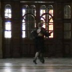
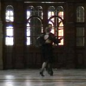

Photos
Photos

 

Directed and shot by Morgana McCabe at Kelvingrove Museum


Photos by Annalisa Simonella – thank you! With thanks to Hillhead Bookclub and La Vallée Blanche


Photos by Annalisa Simonella - with thanks to Brian Loudon for the music


Photos by Annalisa Simonella - with thanks to Glasgow Botanic Gardens
Tango Tipica performance at the opening night of the art exhibition in the chapel of Glasgow University.


Photos by Stewart Ennis – thank you!
Tango Tipica performance at the Tea and Tango event – as featured in The Herald


Photos by David and by Jacqueline Arundel respectively – thank you!


 HomeClassesWorkshopsPrivate tuitionTeaching approachPerformancesCollaboration
HomeClassesWorkshopsPrivate tuitionTeaching approachPerformancesCollaboration Photos and videosExtras: music, shoes and historyLinksAboutContact us
Photos and videosExtras: music, shoes and historyLinksAboutContact usTango Tipica: Argentinian Tango in Glasgow Last verified: 3 January 2012

 Photos and
Photos and